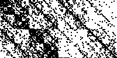

| What happens if we use a non-random sequence in the random IFS algorithm? |
| In particular, can we run the random IFS algorithm with a sequence of data - daily
closing prices of a stock, or the intervals between your heartbeats, for example? |
| Will patterns in the IFS picture reveal patterns in the data? |
| Because we use a data sequence to select the order in which the transformations are
applied, we call this approach driven IFS. The data drive the
order in which the IFS rules are applied. |
| Stewart's examples are
the first instances of driven IFS. |
 |
| Square functions The rules we
shall use for driven IFS |
 |
| DNA sequences The rules need not be
labeled 1, 2, 3, and 4. Any four labels will do. "Homer," "Marge," "Bart," and "Lisa,"
for example. Or perhaps C, A, T, and G. What experiments does this suggest? |
|
| Cyclic driven IFS What happens if
we drive an IFS in a repeating pattern? |
 |
| Driven IFS with forbidden
combinations Gaps in the driven IFS picture indicate combinations of transformations that do not occur. |
 |
|
| Homework 2 |
| Practice homework |
| Homework 1 Solutions |